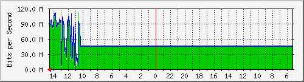

PROXY INDUCTOR
| System: | pfSense.localdomain in |
| Maintainer: | |
| Description: | vtnet0 |
| ifType: | ethernetCsmacd (6) |
| ifName: | vtnet0 |
| Max Speed: | 176.3 MBytes/s |
| Ip: | 0.0.0.0 (No DNS name) |
Estadísticas actualizadas el Jueves 21 de Julio de 2022 a las 14:35,
'pfSense.localdomain' ha estado funcionando durante 3 days, 13:57:31.
Gráfico diario (5 minutos : Promedio)

|
Máx |
Promedio |
Actual |
| Entrante: |
112.0 Mb/s (7.9%) |
47.3 Mb/s (3.4%) |
79.5 Mb/s (5.6%) |
| Saliente: |
111.2 Mb/s (7.9%) |
49.0 Mb/s (3.5%) |
82.0 Mb/s (5.8%) |
Gráfico semanal (30 minutos : Promedio)
|
Máx |
Promedio |
Actual |
| Entrante: |
95.7 Mb/s (6.8%) |
44.2 Mb/s (3.1%) |
95.7 Mb/s (6.8%) |
| Saliente: |
98.7 Mb/s (7.0%) |
45.8 Mb/s (3.3%) |
98.7 Mb/s (7.0%) |
Gráfico mensual (2 horas : Promedio)

|
Máx |
Promedio |
Actual |
| Entrante: |
63.6 Mb/s (4.5%) |
43.8 Mb/s (3.1%) |
63.6 Mb/s (4.5%) |
| Saliente: |
67.3 Mb/s (4.8%) |
45.4 Mb/s (3.2%) |
67.3 Mb/s (4.8%) |
Gráfico anual (1 día : Promedio)
|
Máx |
Promedio |
Actual |
| Entrante: |
43.7 Mb/s (3.1%) |
21.4 Mb/s (1.5%) |
43.7 Mb/s (3.1%) |
| Saliente: |
45.4 Mb/s (3.2%) |
22.2 Mb/s (1.6%) |
45.4 Mb/s (3.2%) |
| VERDE ### |
Entrante:coming Traffic in Bits per Second |
| AZUL ### |
Tráfico saliente en Bits por segundo |